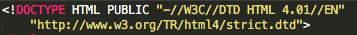
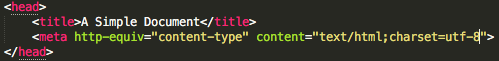
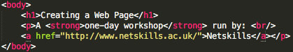
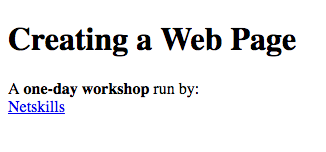

HTML tour
Thank you for choosing HTML tour! There are 3 main destinations for this tour.
You are the boss, so pick which every you like first!
» THE MUSEUM
A RECOMMENDED START: Learn about a brief history and evolution of HTML from time to time.
» THE FACTORY
Here we will have a look on how HTML is used in website development and other useful code samples and resources.
» THE COLOSSEUM
If you feel you have understood enough and you are up for challenges, take a short quiz to test yourself.
THE MUSEUM
What is HTML?
A web document is typically built by a triad of components:
- content
- presentation,
- and behaviour.
HTML stands for Hypertext Markup Language and it is widely known as the standard markup language for creating web pages. It is responsible for content structure and semantics of a web page. This means HTML can be used to hold information that will be displayed in a page with the use of meaningful structures of a text. This may include section headings, paragraphs, etc. We will see more uses of HTML in the factory.
Brief history of HTML
Tim Berners-Lee
HTML was created by the World Wide Web's very own founder, Tim Berners-Lee, an English computer scientist. It all started when Berners-Lee was still working as an independent contractor at CERN (The European Organisation for Nuclear Research). In 1980, he proposed an idea of a computer software-alike that would facilitate researchers to be able to share and update information and their projects. Mostly this was done by email and file exchange, but Berners-Lee was not amused by the conditions. Within months, he already finished his prototype, called ENQUIRE, which would turn out to be the predecessor to the World Wide Web. ENQUIRE
With all the progress made with the Internet and the World Wide Web, 9 years later, Berners-Lee ignited the idea of an Internet-based hypertext system. He was quoted saying:
"I just had to take the hypertext idea and connect it to the Transmission Control Protocol and domain name system ideas and—ta-da!—the World Wide Web ... Creating the web was really an act of desperation, because the situation without it was very difficult when I was working at CERN later. Most of the technology involved in the web, like the hypertext, like the Internet, multifont text objects, had all been designed already. I just had to put them together. It was a step of generalising, going to a higher level of abstraction, thinking about all the documentation systems out there as being possibly part of a larger imaginary documentation system."
Berners-Lee named it HTML and went on to finish writing his browser, followed by a server software. In late 1990, he and Robert Cailliau, a CERN data systems engineer-then, worked together despite CERN did not formally acclaim the project. To start with, Berners-Lee tried to list some examples in which hypertext would be extensively used. Came 1991, he published a simple design of HTML which was heavily influenced by SGMLguid (Standard Generalised Markup Language), which was used at CERN. The design laid out a total of 18 elements building the language.
Timeline of HTML versions
| Year | Progress |
|---|---|
| 1991 | HTML Tags was first publicised |
| Debut of HTML 1.0 with its ability to link documents using the tag "href" | |
| 1994 | HTML 2.0 was released and became an official set of standards for HTML |
| 1996 | For the first time, HTML supports tables |
| 1997 | After many arguments, HTML 3.2 was published with code name WILBUR |
| 1998 | Now including Cascading Style Sheets (CSS), HTML 4.0 was approved |
| 2000 | XML and HTML merged to become XHTML, and with XML as the standard, more strict writing practice was introduced |
| 2002 | Tableless design grew as people started to think tabled design practices are too long-winded; CSS became more popular |
| 2008 | A group of powerhouses, including WHAT, Apple, and Mozilla introduced the draft for HTML5 |
| 2009 | XHTML development team turned to HTML5 as well |
THE FACTORY
The separation of concerns
As stated at the museum, HTML is responsible for the content structure and semantics of a web document. In full below is how a typical web document is built:
- Content structure and semantics: HTML
- Presentation style and layout: CSS
- Behaviour scripting and interactivity:
- JavaScript (client-side)
- PHP, Perl, Java, Ruby, etc. (server-side)
Why is the separation made in the first place? Firstly, this is a good practice to ease developers in maintaining their website, given they can classify easily where an issue relies: content, presentation, or behaviour. Also, this consistency is a huge benefit for a team of developers or when someone has to look into someone else's script. This obviously improves accessibility and control. In theory, separation of content tells us a lot about a page as well. We would be able to differ between a heading and large font, strong emphasis and bold, or a new paragraph and a line break. Generally, the separation of concerns works as how lines of code are broken down into methods that perform different functions. It gives so much ease when elements of a web document are separated into building blocks.
HTML: A simple view
- Content
- Text (and images)
- Elements (Tags)
- Core structure for the content
- Focus on semantics and organisation
- Default rendering conventions allow for basic (functional) display
- Attributes
- Additional information/semantics about elements
Basic structure
Working with HTML requires an attention to a good structure. It is so important as correctly structured HTML will allow for consistent rendering in browsers. It also makes editing and maintaining of documents a lot easier. As of W3C, a basic HTML document should contain:
- A line containing HTML version information
This includes a Document Type Definition (DTD) declaration, which declares the version of HTML used. Although browsers do not usually validate pages against DTD, this allows browsers to process document correctly. An example declaration for HTML 4.01 document is shown below.
 - A declarative header section (delimited by the <head> element)
This area provides information about the document and is used to help processing it. It must include a <title> tag and character set info. Some optional declarations and references (e.g. scripts via <script>) can also be included. An example header section is shown below.
Script:
Result: - A body, which contains the document's actual content (implemented by the <body> element)
This area is processed into the content users will actually see. The final appearance may be influenced by additional information from header section, such as the inclusions of scripts and style sheets. An example is shown below.
Script:
Result:
Meanwhile, sections 2 and 3 should be delimited by the <html> tag as shown below.
Tags and attributes
Tags, as shown in the screenshots above, are usually wrapped around content in pairs i.e. an opening and an end tags. However, some tags (e.g. <br />) are not paired. Inline tags (e.g. <em>) can be nested inside block level tags (e.g. <p>).Also, some tags can be nested together, for example: <p> inside a <div>.
Meanwhile, attributes specify the additional properties and/or behaviour for HTML tags as name/value pairs. These attributes have to be declared in the opening tag addressing the following rule: <tag attribute="value">content<tag>. An example is: <div id="content-block">content<div>. There are some common attributes that can be applied to any tags inside the body. Typically, they are used as a framework for enhancing the user experience. Here is the list of some common attributes:
| Attribute | Purpose |
|---|---|
| class | Associates an element with a CSS class |
| id | Uniquely identifies element for CSS/scripting |
| style | Provides inline CSS style rules for an element |
| title | Describes an element and its content. Creates tooltips in browsers & used by screen readers |
Body tags
There are 3 types of body tags:
- Block-level
- Define blocks of content
- Browser will add new lines above and below
- Default width/height handled automatically
- Inline
- Semantics and organisation within block
- Not associated with new lines
- Must be nested inside a block-level element
- Replaced
- Browser calculated dimensions and replaces with embedded or drawn objects
- Nesting as for inline tags
- Used for specific page elements such as images and form controls